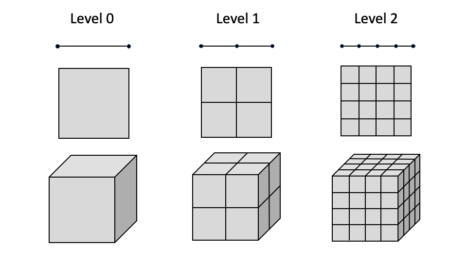

- active__all__ If specified only the blocks named will be visited and made active
Default:__all__
C++ Type:std::vector<std::string>
Controllable:No
Description:If specified only the blocks named will be visited and made active
- adaptivity_typehSelect between h, p or hp mesh adaptivity
Default:h
C++ Type:MooseEnum
Controllable:No
Description:Select between h, p or hp mesh adaptivity
- cycles_per_step1The number of adaptive steps to use when on each timestep during a Transient simulation.
Default:1
C++ Type:unsigned int
Controllable:No
Description:The number of adaptive steps to use when on each timestep during a Transient simulation.
- inactiveIf specified blocks matching these identifiers will be skipped.
C++ Type:std::vector<std::string>
Controllable:No
Description:If specified blocks matching these identifiers will be skipped.
- interval1The number of time steps betweeen each adaptivity phase
Default:1
C++ Type:unsigned int
Range:interval>0
Controllable:No
Description:The number of time steps betweeen each adaptivity phase
- markerThe name of the Marker to use to actually adapt the mesh.
C++ Type:MarkerName
Controllable:No
Description:The name of the Marker to use to actually adapt the mesh.
- max_h_level0Maximum number of times a single element can be refined. If 0 then infinite.
Default:0
C++ Type:unsigned int
Controllable:No
Description:Maximum number of times a single element can be refined. If 0 then infinite.
- recompute_markers_during_cyclesFalseRecompute markers during adaptivity cycles
Default:False
C++ Type:bool
Controllable:No
Description:Recompute markers during adaptivity cycles
- start_time-1.79769e+308The time that adaptivity will be active after.
Default:-1.79769e+308
C++ Type:Real
Unit:(no unit assumed)
Controllable:No
Description:The time that adaptivity will be active after.
- steps0The number of adaptive steps to use when doing a Steady simulation.
Default:0
C++ Type:unsigned int
Controllable:No
Description:The number of adaptive steps to use when doing a Steady simulation.
- stop_time1.79769e+308The time after which adaptivity will no longer be active.
Default:1.79769e+308
C++ Type:Real
Unit:(no unit assumed)
Controllable:No
Description:The time after which adaptivity will no longer be active.
Adaptivity System
MOOSE employs -adaptivity and -adaptivity to automatically refine or coarsen the mesh in regions of high or low estimated solution error, respectively. The idea is to concentrate degrees of freedom (DOFs) where the error is highest, while reducing DOFs where the solution is already well-captured. This is achieved through splitting and joining elements from the original mesh based on an error Indicator. Once an error has been computed, a Marker is used to decide which elements to refine or coarsen. Mesh adaptivity can be employed with both Steady and Transient Executioners.
Refinement Patterns
MOOSE employs "self-similar", isotropic refinement patterns, as shown in the figure. When an element is marked for refinement, it is split into elements of the same type. For example, when using Quad4 elements, four "child" elements are created when the element is refined. Coarsening happens in reverse, children are deleted and the "parent" element is reactivated. The original mesh starts at refinement level 0. Each time an element is split, the children are assigned a refinement level one higher than their parents.

Self-similar refinement pattern utilized by MOOSE for adaptivity for 1D linear, 2D quadrilateral, and 3D hexahedron elements.
P-Refinement
P-refinement can be selected by setting adaptivity_type = p in the Adaptivity block (whether using the older Executioner/Adaptivity syntax which uses libMesh error estimators or the newer top-level Adaptivity block (referenced by this page) using the Indicators and Markers introduced towards the beginning of this page). P-refinement level mismatches are not supported for continuous, non-hierarchic finite element families. Additionally, p-refinement of NEDELEC_ONE and RAVIART_THOMAS elements is not supported. Consequently, by default we disable p-refinement of the following bases: LAGRANGE, NEDELEC_ONE, RAVIART_THOMAS, LAGRANGE_VEC, CLOUGH, BERNSTEIN, and RATIONAL_BERNSTEIN. Users can control what families are disabled for p-refinement by setting the disable_p_refinement_for_families parameter.
HP-Refinement
MOOSE includes experimental HP refinement capability. HP refinement can be selected by setting adaptivity_type = hp in the Adaptivity block. HP-refinement works by performing a coarsening test on elements just flagged for h-refinement (using libMesh error indicators or the Indicator/Marker systems). The coarsening test coarsens in both h and p and notes whichever changes the solution more. If p shows a larger solution change (after doing some weighting based on how many degrees of freedom are added) and the solution is sufficiently smooth as determined by decay rates of Legendre coefficients, then we switch the element refinement choice from h to p. As noted in the documentation for the HPCoarsenTest class, more development is likely required to produce optimal hp meshes.
Cycles and Intervals
MOOSE normally performs one adaptivity step per solve. However, developers have the ability to increase or decrease the amount of adaptivity performed through the "cycles" and "interval" parameters.
The "cycles" parameter can be set to perform multiple adaptivity cycles for a single solve. This is useful for cases where one would like to resolve a sharp feature in a single step, such as in the case of an introduced nucleus.
[./Adaptivity<<<{"href": "index.html"}>>>]
refine_fraction = 0.3
max_h_level<<<{"description": "Maximum number of times a single element can be refined. If 0 then infinite."}>>> = 7
cycles_per_step<<<{"description": "The number of adaptive steps to use when on each timestep during a Transient simulation."}>>> = 2
[../]The "interval" parameter can be set to decrease the amount of adaptivity is performed so that it is performed on every _nth_ step. This can sometimes help to speed up your simulation as adaptivity can be somewhat expensive to perform.
[./Adaptivity<<<{"href": "index.html"}>>>]
interval<<<{"description": "The number of time steps betweeen each adaptivity phase"}>>> = 2
refine_fraction = 0.2
coarsen_fraction = 0.3
max_h_level<<<{"description": "Maximum number of times a single element can be refined. If 0 then infinite."}>>> = 4
[../]Input Parameters
- control_tagsAdds user-defined labels for accessing object parameters via control logic.
C++ Type:std::vector<std::string>
Controllable:No
Description:Adds user-defined labels for accessing object parameters via control logic.
Advanced Parameters
- initial_markerThe name of the Marker to use to adapt the mesh during initial refinement.
C++ Type:MarkerName
Controllable:No
Description:The name of the Marker to use to adapt the mesh during initial refinement.
- initial_steps0The number of adaptive steps to do based on the initial condition.
Default:0
C++ Type:unsigned int
Controllable:No
Description:The number of adaptive steps to do based on the initial condition.
Initial Adaptivity Parameters
Available Subsystems
- Moose App
- Indicators
- Markers